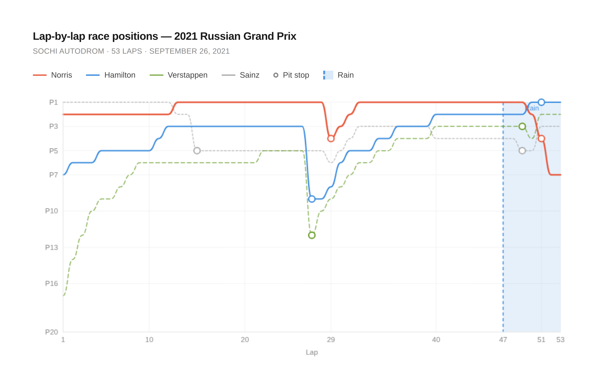
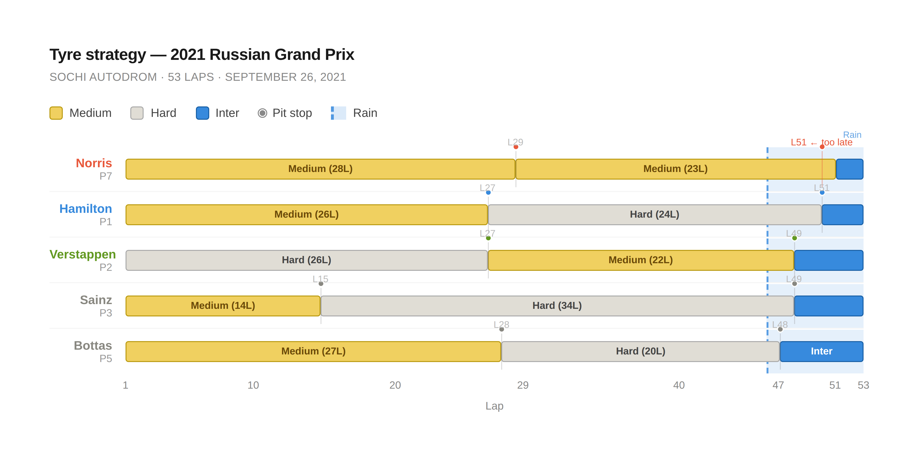
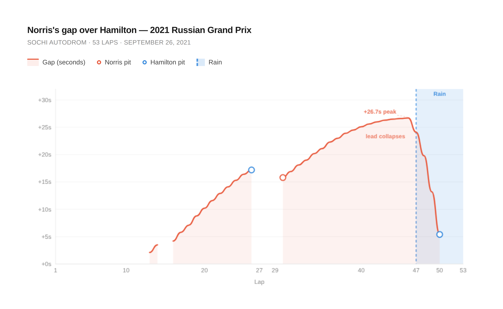

The Three Laps That Cost Lando Norris His First F1 Win
McLaren had a 26-second lead, a dominant car, and a clear window to pit. What happened next is a masterclass in how a single strategic misjudgement can unravel an otherwise flawless race.
By Zain Karu | June 11, 2026
Introduction
Lap 49. Lando Norris has been dominating the 2021 Russian Grand Prix for most of the afternoon– 26.7 seconds ahead of the rest of the field. The rain that started falling a few laps ago is getting heavier. His radio crackles as his engineers tell him to come in for wet-weather tires. He stays out. He believes he can hold on.However, he cannot.
Within two laps, Hamilton has swept past him. Within three, Norris has plummeted all the way down to seventh. The first Formula 1 victory of his career, which had been right there, closer than it had ever been, slipped through his fingertips. And the worst part, the part that makes this particular race one of McLaren’s most painful strategic failures in recent memory, is that it was entirely preventable.
How Norris built the lead
To understand what McLaren threw away, you first have to understand how thoroughly Norris had controlled the race up to that point. He had taken his first-ever pole position in tricky conditions at Sochi, constantly transitioning from wet to dry. Hamilton, the championship leader and heavy favorite for victory, qualified fourth after damaging his car at the pit lane entry and failing to put in a clean lap afterward.At the start, Ferrari’s Carlos Sainz was able to take the lead from second on the grid down the inside on Turn 2. However, Norris retook the lead from Sainz on Lap 13 and held onto it for much of the race. Hamilton spent the early stages of the Russian Grand Prix buried in traffic down in seventh place. By the time the initial pit cycle played out around Lap 35, Norris was holding a lead of over 20 seconds with blistering pace compared to the rest of the field.
Graph 1 tells this story more cleanly than words can. The red line, representing Norris, runs flat along the top of the chart for lap after lap, indicating that he led the race for most of its duration. Hamilton’s blue line is a long, slow climb from the bottom. The shapes of these two lines are the entire strategic narrative of the race compressed into a single image.
While Norris was leading the race very comfortably, Lewis Hamilton and Mercedes were quietly playing the long game, through keeping their eyes on the weather forecast. This would make all the difference later on.

Norris sits as a near-flat line at P1 for the majority of the race, which tells you everything about how dominant his pace was on the day. The moment the rain arrives at lap 47, that line drops off a cliff, as he loses three positions in three laps. Hamilton’s line, by contrast, is a steady climb from the back that ends at the top, which shows how strategy ended up deciding the race result.
The decision window: laps 46–51
Rain in Formula 1 cannot be characterized by a sudden event. Instead, it is a process that teams watch with radar data, temperature sensors, and driver reports from the track. The window in which McLaren needed to make their call was not a matter of seconds. It was several laps wide.Lap 46: light rain begins to fall. At this point, the track is still raceable on slicks, and teams begin to start discussing options on the pit wall. Throughout Laps 47 and 48, the majority of the field has pitted for wet-weather tires. By Lap 50, Norris, having stayed out on the dry tyres, is struggling to stay on the track and nearly loses the car at Turn 5. Within a single lap, Norris slides off, and Hamilton comes through to take the lead and the win.
Norris later explained the thinking: "I got told the rain was going to stay the same amount. Had it stayed the same amount; we [would’ve made] the right decision, but it obviously got a lot wetter than we as a team expected." That explanation is honest, but it doesn't hold up against the data. The majority of the field, crucially Mercedes, read it correctly.
Graph 2 tells quite a story. Look at how isolated Norris’s second medium stint is: every other driver gets their intermediates on right as the rain band begins, while the bar corresponding to Norris keeps running straight through it. The L51 pit marker tells the whole story: McLaren and Hamilton pit on the exact same lap, but by then Norris has already lost the lead and several positions, due to him sliding off the track.

Every other driver's bar ends as the rain band arrives. Norris's line keeps running. The L51 pit marker is the damning detail: same lap as Hamilton, but Norris is already seventh.
The numbers behind the collapse
This failure was honestly quite embarrassing for McLaren because the numbers never really supported staying out on the slick tyres. Norris’s gap to Hamilton at its peak (26.7 seconds on Lap 46) was much larger than the average pit time of 23 seconds. Therefore, Norris could’ve pitted once the rain started to come down on Lap 47 and still maintained his lead.
Instead, every lap he stayed out on his old mediums cost him anywhere from 5-7 seconds per lap relative to other drivers who pitted earlier, as represented by the steep downward slope of Norris’s line from Laps 48-51 in Graph 3. A 26-second lead becomes 20, then 13, then five, then nothing. Hamilton eventually overtakes him while Norris is sliding helplessly off track.
The chart also makes visible something easy to miss in a race broadcast: the gap remained large and stable for 20 laps after the Lap 29 pit stops. Norris’s lead was never under threat in dry conditions. The threat only arrived with the rain, and it arrived faster than McLaren and Lando were willing to act.

For most of the race, Norris is sitting on a 20-plus second cushion over Hamilton — comfortably large enough to absorb a pit stop and still come out ahead. The gap peaks at +26.7 seconds on lap 46, which is the exact moment McLaren should have been making the call to pit. From the moment rain arrives, the filled area collapses at roughly 5–7 seconds per lap.
What a lap-47 pit stop would have meant
The counterfactual here is unusually clean. If McLaren pits Norris at lap 47, the same lap as Mercedes’s other driver, Valtteri Bottas, he loses roughly 23 seconds in pit lane time and rejoins in approximately second place, behind Hamilton, who is still on track. But Hamilton pits three laps later. Norris, now on fresh intermediates with a comfortable margin, wins the race, especially due to the fact that he would be gaining time on Hamilton while he is on intermediates when Hamilton is on dry-weather tyres.
Even a lap 48 call likely results in a win. The margin was that large. McLaren did not need to make a brave call. They needed to make the obvious one.
This is what makes Sochi 2021 so instructive as a strategy case study. It is not a situation where the right call was unclear or the data was ambiguous. The gap was sufficient. The rain was visible. The rest of the field was pitted. The window was open, and McLaren did not take it.
What was lost
Lando Norris was 21 years old at the 2021 Russian Grand Prix. He had just taken the first pole position of his career. He led 48 of 53 laps. For much of the afternoon, he was the fastest driver on track in a car that, for one weekend, matched anything Mercedes or Red Bull could put on the circuit.He finished seventh.
The strategic failure at Sochi did not just cost Norris a win. It cost him many points in a championship battle against Ferrari, which came down to the final race of the 2021 season in Abu Dhabi. The data makes it simple. The 26.7-second lead was enough. The window was there, and it wasn’t even a small one. And it closed before McLaren and Norris were ready to use it. Because of Norris’s and McLaren’s strategic blunder in the most crucial of moments, he would have to wait almost three whole years and over 50 Grand Prix before he would take his first victory at the Miami International Autodrome.